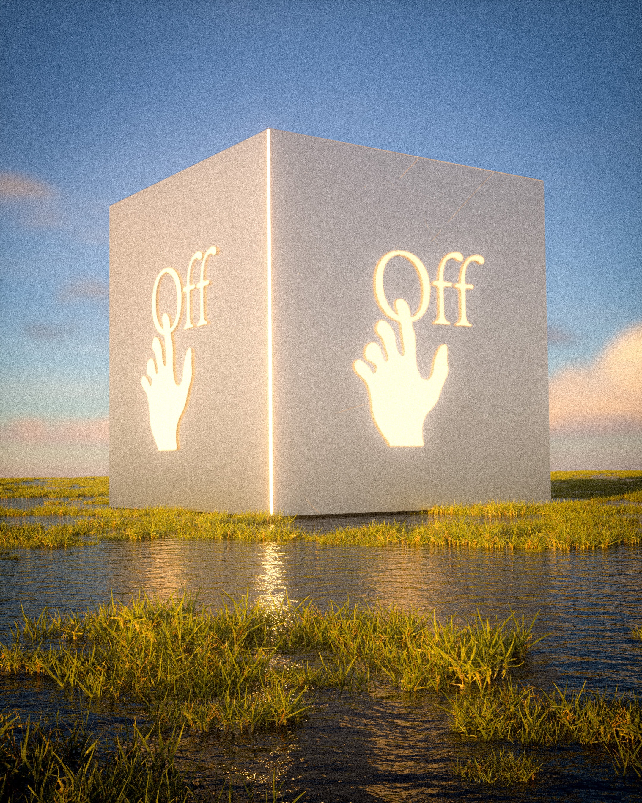
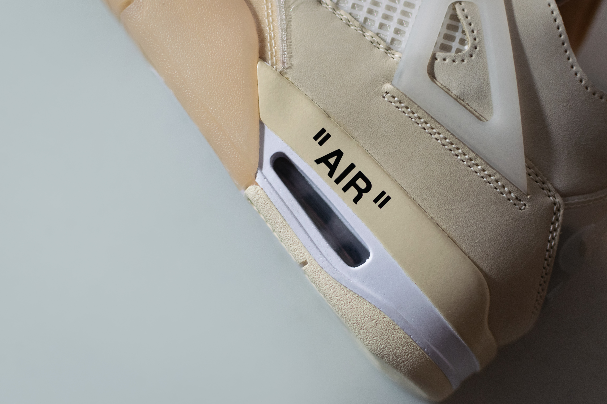
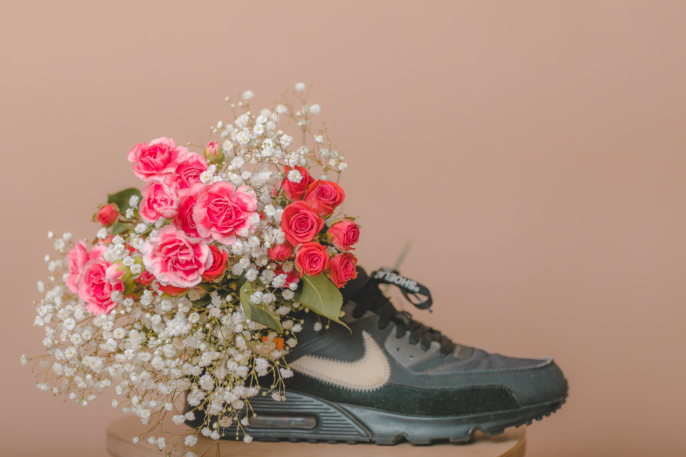

A trained architect, Abloh, who also worked in Chicago street fashion, entered the world of international fashion with an internship at Fendi in 2009, alongside American rapper Kanye West. The two then began an artistic collaboration that would launch Abloh's career into founding Off-White. The first African-American to be artistic director at a French luxury fashion house, Abloh was named by Time magazine as one of the 100 most influential people in the world in 2018. Abloh's design aesthetic which bridged streetwear and luxury clothing was described as transformative by The New York Times.According to The Wall Street Journal, he reached a level of global fame unusual for a designer, and an inspirational figure, according to the BBC. Virgil Abloh was born on September 30, 1980, in Rockford, Illinois, to Ghanaian immigrant parents. His mother was a seamstress and his father managed a paint company. From his mother, he learned how to sew. Abloh was raised in Rockford, where he attended Boylan Catholic High School, graduating in 1998.He graduated from the University of Wisconsin–Madison in 2002 with a Bachelor of Science degree in civil engineering. He received his Master of Architecture at the Illinois Institute of Technology (IIT) in 2006. When Abloh was attending IIT, there was a building on campus under construction designed by the architect Rem Koolhaas (who had also worked on runway collections for Prada). Koolhaas's building helped spark his interest in fashion. and Abloh was further inspired by Crown Hall a modernist masterpiece designed by Ludwig Mies van der Rohe. Abloh's master's thesis project involved a design for a Chicago skyscraper, which curved in the direction of Lake Michigan, as if leaning toward the rising sun. While studying architecture, he also designed T-shirts and wrote on fashion and design for a well-known blog, The Brilliance. Abloh first met popular musician Kanye West while working on his designs at a Chicago print shop.
LIFETIME
VIRGIL ABLOH: AESTHETIC WHICH BRIDGED STREETWEAR & LUXURY CLOTHING
Listed as One of Time Magazine's Hundred Most Influential People in The World in 2018
Text Adapted From: Wikipedia.org
Layout Inspiration: Ssense.com


EARLY lIFE AND EDUCATION
A trained architect, Abloh, who also worked in Chicago street fashion, entered the world of international fashion with an internship at Fendi in 2009, alongside American rapper Kanye West. The two then began an artistic collaboration that would launch Abloh's career into founding Off-White. The first African-American to be artistic director at a French luxury fashion house, Abloh was named by Time magazine as one of the 100 most influential people in the world in 2018. Abloh's design aesthetic which bridged streetwear and luxury clothing was described as transformative by The New York Times.According to The Wall Street Journal, he reached a level of global fame unusual for a designer, and an inspirational figure, according to the BBC. Virgil Abloh was born on September 30, 1980, in Rockford, Illinois, to Ghanaian immigrant parents. His mother was a seamstress and his father managed a paint company. From his mother, he learned how to sew. Abloh was raised in Rockford, where he attended Boylan Catholic High School, graduating in 1998.He graduated from the University of Wisconsin–Madison in 2002 with a Bachelor of Science degree in civil engineering. He received his Master of Architecture at the Illinois Institute of Technology (IIT) in 2006. When Abloh was attending IIT, there was a building on campus under construction designed by the architect Rem Koolhaas (who had also worked on runway collections for Prada). Koolhaas's building helped spark his interest in fashion. and Abloh was further inspired by Crown Hall a modernist masterpiece designed by Ludwig Mies van der Rohe. Abloh's master's thesis project involved a design for a Chicago skyscraper, which curved in the direction of Lake Michigan, as if leaning toward the rising sun. While studying architecture, he also designed T-shirts and wrote on fashion and design for a well-known blog, The Brilliance. Abloh first met popular musician Kanye West while working on his designs at a Chicago print shop.

CAREER
"Rise to Prominence"
Virgil Abloh was born on September 30, 1980, in Rockford, Illinois, to Ghanaian immigrant parents. His mother was a seamstress and his father managed a paint company. From his mother, he learned how to sew. Abloh was raised in Rockford, where he attended Boylan Catholic High School, graduating in 1998. He graduated from the University of Wisconsin–Madison in 2002 with a Bachelor of Science degree in civil engineering. He received his Master of Architecture at the Illinois Institute of Technology (IIT) in 2006. When Abloh was attending IIT, there was a building on campus under construction designed by the architect Rem Koolhaas (who had also worked on runway collections for Prada). Koolhaas's building helped spark his interest in fashion. and Abloh was further inspired by Crown Hall a modernist masterpiece designed by Ludwig Mies van der Rohe. Abloh's master's thesis project involved a design for a Chicago skyscraper, which curved in the direction of Lake Michigan, as if leaning toward the rising sun. While studying architecture, he also designed T-shirts and wrote on fashion and design for a well-known blog, The Brilliance. Abloh first met popular musician Kanye West while working on his designs at a Chicago print shop.

"OFFWHITE"
Abloh founded his first fashion house and second business overall in 2013 with the high-end streetwear brand Off-White, designing a logo inspired by Ben Kelly. Based in Milan, Italy, the company was described by Abloh as "the gray area between black and white as the color off-white" to investors and fashion critics.During the launch of his brand, he received help from the New Guards Group, who also assisted many other designers and brands, such as Palm Angels, Heron Preston, and Marcelo Burlon. Abloh said his first Off-White collection was inspired by Ludwig Mies van der Rohe's floating glass home, Farnsworth House, and presented it with references to the Baroque artist Caravaggio and the early 20th century German design studio The Bauhaus. The brand lead generated widespread attention for his apparel beginning in Paris, then expanding to China, Japan, and the United States. The clothing line can be identified through its use of quotation marks, zip-ties, capital letters, and barricade tape. He launched the company's women's wear line in 2014 and showed the collections at Paris Fashion Week. His line was selected as a finalist for the LVMH Prize, an industry award, but lost to Marques'Almeida and Jacquemus. Abloh launched his first concept store for Off-White in Tokyo, Japan, where he started the company's furniture arm, Grey Area. Through Abloh's re-designing he exercised his self-made rule of only editing the shoes 3% of the way because he was intrigued by still maintaining the original design of the shoe.
By the end of 2018, an index of sales and consumer sentiment ranked Off-White as the hottest label in the world, surpassing Gucci. Virgil also partnered up with the Swedish furniture company IKEA to design furniture for apartments and houses as well as easy to carry tote bags with the word sculpture imprinted in the middle. The collection was named Markerad, which is a Swedish word meaning "clear-cut; crisp; pronounced", and was released in 2019. Virgil envisioned that the collection would include practical furniture featuring contemporary designs. In 2017, he was asked to design a new collection in conjunction with Nike entitled "The Ten" and he re-designed a variety of the company's best-selling shoes. Abloh worked towards fulfilling his vision for the IKEA collection by sketching out drafts of generic pieces of furniture, while adding his own aesthetics to the designs by using a doorstop to level out furniture items. Abloh worked on designs for chairs, coffee tables, beds, storage cabinets, mirrors, and carpets apart of his collaboration with IKEA. Abloh used quotation marks to convey detachment from society and social norms. During the rise in neo-nationalism in 2017 Abloh worked with conceptual artist Jenny Holzer to create a line emphasizing the positive aspects of immigration, cultural integration, and globalization. In December 2017, he worked with Holzer again to design T-shirts for Planned Parenthood in response to the Women's March on Washington.

"LOUIS VUITTON"
On March 25, 2018, Abloh was named artistic director of Louis Vuitton's menswear ready wear line, making him the first person of African descent to lead the brand's menswear line, as well as one of the few black designers at the helm of a major French fashion house. Upon his acceptance of the position, he stated, "It is an honor for me to accept this position. I find the heritage and creative integrity of the house are key inspirations and will look to reference them both while drawing parallels to modern times". Abloh showed his first collection for Louis Vuitton at the 2018 Men's Fashion Week at the Palais-Royal gardens in Paris. Rihanna was the first well known person to wear Abloh prior to this watershed show. Playboi Carti, Steve Lacy, A$AP Nast, Dev Hynes, and Kid Cudi walked the runway for Abloh's debut Vuitton show. Abloh was in high demand thereafter for his designs, creating an original outfit designed for Serena Williams to wear throughout the 2018 US Open, a collaboration with Nike. On June 5, 2018, Abloh released a special collaboration with the luggage manufacturer Rimowa, a transparent suitcase in a limited edition. In March 2019, Abloh collaborated with Ikea to start making furniture for millennials, ranging from cabinets, rugs, coffee tables, and chairs. Abloh incorporated different elements of style, such as his quotation marks around certain words and putting it on different articles of clothing, and in this case different types of furniture. For example, Abloh created a "Door Stop Interruption" on a chair by adding a doorstop on one of the chair legs to make it elevated. One of Abloh's most popular items is the Frakta Bag. It is beige with the text "SCULPTURE" imprinted on the side. In March 2019 Abloh teamed up with SSENSE to release a workout collection. This collection contained a variety of workout clothes ranging from; matching leggings and sports bras, athletic sweaters, and crop tops. The collection incorporated some of Abloh's signature designs by including the Off-White yellow sign wrapping around the waist of the pants and bottom of the sports bras. Abloh also included a three-dimensional addition of his four-way arrows, creating a cross, on the front of the tops and pants. Abloh was featured in conversation with his friend and frequent collaborator Takashi Murakami on the cover of the fall 2018 issue of Cultured magazine. In 2019, Abloh was appointed to the board of directors of The Council of Fashion Designers of America. The council seeks to promote the American fashion industry. Abloh created a custom Off-White gown and veil for Hailey Bieber's wedding day. On the veil, he included his famous quotation marks design around the words "till death do us part". In July 2021, LVMH Moët Hennessy Louis Vuitton announced it would be taking a 60% stake in Off-White, with founder Abloh, then the creative director of menswear for Louis Vuitton, retaining the remaining 40%. At the same time, Abloh was given greater creative control across the LVMH brand.

AWARDS AND HONORS
Abloh received his first major award in 2011 when his work designing the cover art for American rappers Jay-Z and Kanye West's collaborative album Watch the Throne was nominated for a Grammy Award for Best Recording Package. In 2015, Abloh (for Off-White) was one of the finalists for the LVMH Prize. Abloh was the only American designer to be nominated for the award that year. Abloh's Charlie Hebdo-inspired "War is Not Over!" tees as well as his toppers from his fall 2015 women's collection gained him the most traction. He received the Urban Luxe award at the 2017 British Fashion Awards. He also won International designer of the Year at the GQ men of the year awards in 2017.Abloh's Off-White Air Jordan "the Ten" collaboration won 2017's Shoe of the Year and he received the nod for Accessory Designer of the Year. Abloh was listed as one of Time magazine's 100 most influential people in the world in 2018, one of two designers named that year. In the Time issue, Japanese artist Takashi Murakami wrote that Abloh's impressive achievements led to his listing. In December 2018, Abloh was honored as a leading innovator by Ebony Power 100. Abloh was also nominated for 2019 Menswear Designer of the Year.

PERSONAL LIFE & DEATH
Abloh lived in Chicago with his wife, Shannon, and their two children. In 2019, Abloh was diagnosed with cardiac angiosarcoma, a type of cancer, though he kept the diagnosis private. He died on November 28, 2021, at the age of 41, in Chicago. LVMH with the family's permission paid tribute to Abloh at their planned November 30 spin-out fashion show in Miami, with a theme of, "Virgil was here". Kanye West, Kim Kardashian, Rihanna, ASAP Rocky, Bella Hadid, Pharrell Williams, Tahar Rahim, Venus Williams, Joe Jonas, Ricky Martin, Jeremy Pope, 21 Savage, Joan Smalls, and Bernard Arnault attended the tribute. Louis Vuitton dedicated its window-displays worldwide, also using the dedication, "Virgil was here". Abloh's private funeral took place on December 6, 2021 in Chicago, with Drake, Rihanna, Kanye West, Kim Kardashian, Kid Cudi, Tyler, the Creator, ASAP Rocky, Frank Ocean, Vic Mensa, Lauryn Hill, Don C, and Jerry Lorenzo in attendance amongst his family and other close friends.